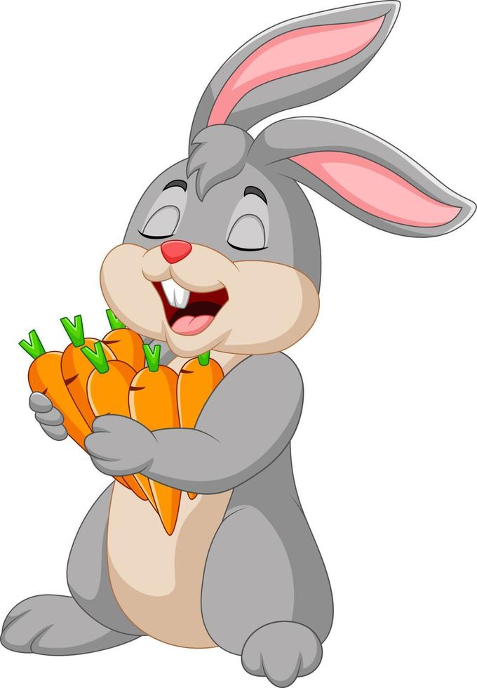

Boni era el conejito más pequeño de todos, pero tenía un pasatiempo muy diferente al de los demás: recolectar patatas, ¡patatas de todo tipo! A Boni le gustaba comer patatas un montón, incluso más que las mismas zanahorias o lechugas que a todos los demás conejos.Pero a Boni también le gustaba compartir sus patatas con los demás, pues estaba convencido de que eran las más ricas. Sin embargo, cuando los conejos le ofrecían de intercambio algunas zanahorias, él decía que no le gustaban para sorpresa de todos. En cierta ocasión alguien le preguntó por qué no le gustaban las zanahorias, y Boni solo supo decir que no le gustaban por el color.
Tras ello le preguntaron si no le gustaban por el sabor, y él dijo que no sabía, porque nunca las había probado. Entonces uno de sus amigos le dijo que no podía decir que no le gustaban si no las había probado, y él solo contestó que no las quería probar, pues eran asquerosas. Al día siguiente, una de las amigas de Boni horneó un pastel de zanahoria, y fingiendo que era de naranjas se lo dio a probar al pequeño conejo. Pero Boni, que no era tonto, nada más olerlo supo que se trataba de una trampa y se molestó muchísimo diciendo: “¡No, no y no!”.En otra ocasión en la que hacía mucho calor, otro amigo preparó un refresco de zanahoria, y diciendo que era naranja se lo ofreció a probar, y al descubrir la trampa el pequeño Boni dijo que prefería estar sediento que beber algo hecho de zanahorias. Él prefería las patatas, que podía comérselas como fuese y no se aburría de ellas… “¿Por qué no le ofrecían patatas?” preguntaba para sí. Y así hasta que el invierno llegó y poco a poco se fueron terminando sus patatas. Los demás conejos tenían reservas de zanahorias por kilos y todos se ofrecían entre sí, pero no podían ofrecérselas a Boni porque siempre se negaba a probarlas.Boni veía con tristeza cómo sus patatas se agotaban y cada vez tenía más hambre, así que no sabía muy bien qué hacer. Tarde o temprano tendría que comer algo que no fuese sus deliciosas patatas, o lo iba a pasar muy mal durante todo el invierno.Un día se acercó al gran comedor de los conejos, donde todos se encontraban comiendo unas jugosas zanahorias, pero estaba cansado de estar solo a la hora de comer. Cuando se sentó todo el mundo empezó a mirarlo, sabiendo que era muy difícil para él estar allí. Entonces uno de sus amigos se acercó y le preguntó si estaba bien, y Boni le dijo que tenía hambre:
Finalmente, y movido por la desesperación, Boni aceptó, y cuando tomó el primer bocado sus ojos se abrieron como platos… ¡no era tan malo! Primero tomó una zanahoria pequeña, luego una mediana y, antes de que se diera cuenta, se estaba comiendo una zanahoria más grande que él mientras todos reían.Ahí fue cuando Boni aprendió que no podía decir que algo no le gustaba solo por la apariencia, si no lo había probado. Una vez que pruebas las cosas ya puedes decir si te gustan o no, y ahora Boni ya lo sabía. Y por si fuera poco, descubrió que también las había de más colores, ¡como sus deliciosas patatas! Así que ahora Boni estaba muy contento, porque además de tener mucho para comer, podía preparar las mejores ensaladas de patata y zanahoria de tooooodos los conejos.